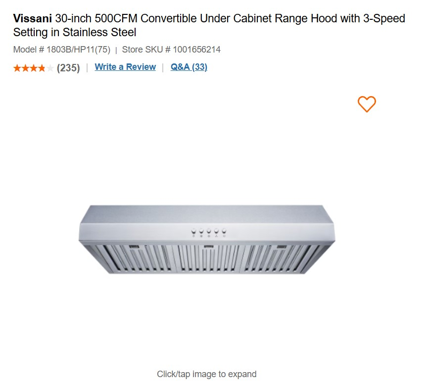
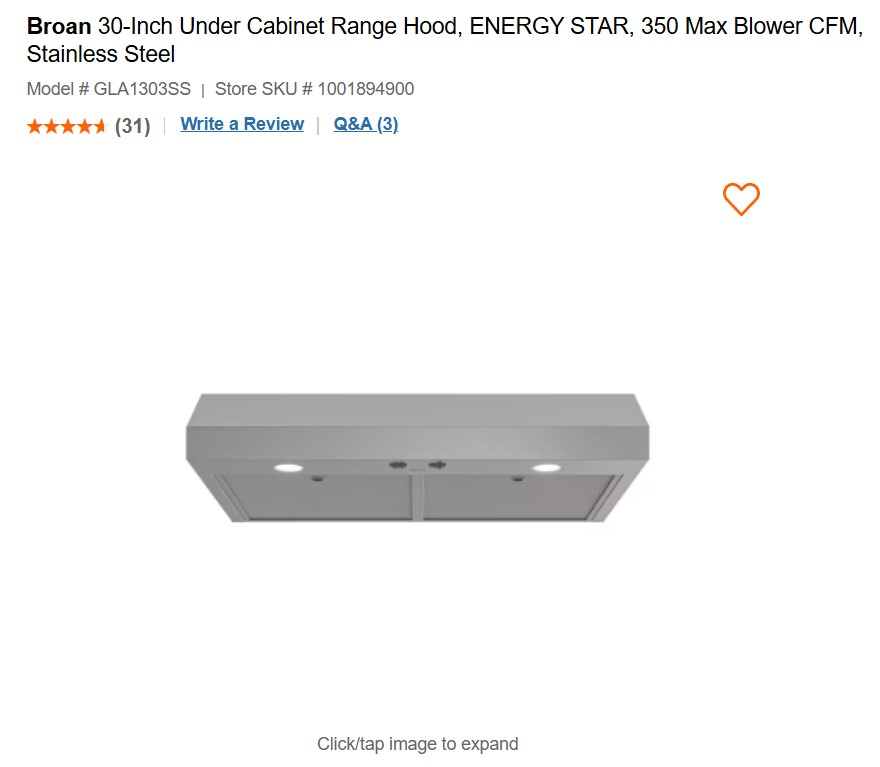

Hello everyone If you are looking for a dishwasher or Hood Fan then you are on the right page.
We perform installation in Vancouver-Burnaby-Coqutlam.
You can order a dishwasher from us and we will bring it to you with installation and removal of the old one.
In fact, there are many models of dishwashers and hoods, and we can also install any you want.
We accept cash, e-transfers, bitcoin, and also accept credit cards, whatever you want,
we will do everything

Hood fan Model
$490
Extra Shipping is $30 and installation is an additional $200.
Model # 1803B/HP11(75) Store SKU # 1001656214
Tax extra.

Hood fan model
$330
Extra Shipping is $30 and installation is an additional $200.
All these models GE, Whirpool,Maytage have similar problems, this happens when we wash our clothes, at some sudden moment at the end of washing the clothes are left wet with water, this is a very big problem.
The washing machine receives a very heavy load while doing the washing, especially when inside your clothes, but if you put the GEwashing machine in, the washing machine receives twice as much load.
GE washer stops mid cycle
GE washer stops mid cycle what to do?
So the washing machine may leave water inside the washing machine not drain, be careful and collect all the water with a plastic cup, if after restarting a new washing program it It happened again and there is water inside the washing machine.How to get maytage washer to drain GE,Whirpool, It’s better to call us and not kill the washing machine; as a result of an overload, the control board may burn out, it is subject to loads from the electrical network, or some other problem
How do I reset my GE washer?
Reviews for home appliance repair Vancouver.
Review (2023.10.12)
Jessica Miller from Vancouver
We called this fast-fix company to repair
our Maytage dishwasher, the dishwasher stopped running with water,
the guys came, turned it around and finally fixed it,
our family saved $500, we didn t buy a new one, we will contact them in the future.Thank you.
Review (2023.12.01)
Scarlett from Burnaby
One fine day our Samsung dryer broke down, it wouldn t turn on,
we are dependent on it, we save money, we have a large family,
I decided to order the dryer repaired, thanks guys, everything works.
Review (2023.08.11)
Maddison from Coquitlam
5 years have passed since we bought our huge Zabzerro refrigerator,
water started leaking onto the floor from the freezer, ice was collecting,
I couldn t wait long, the guys came and fixed it, thank you, I m so glad.
Review (2024.06.01)
Harry from West Vancouver
Thank you guys, they fixed my grill in a restaurant,
it was the switches that didn t work, then they broke, without it I wouldn t have been able to work,
3 months have passed and everything is working after the repair.
Review (2024.02.01)
James from North Vancouver
The LG washing machine broke down, it just stopped running with water,
I couldn t open the door, I called the guys, they fixed everything,
replaced the spare parts, everything works great, Thanks to Oscar.
Review (2024.03.11)
Jack from Surrey
The Maytag dryer doesn t heat up, it doesn t dry the clothes,
the guys fixed it in a couple of hours, now it s like new,
I know how to save money. Thank you for having such hands and a head.
Review (2024.04.21)
Archie from Vancouver
Maytag refrigerator is not cooling,
the light was on but there was no cold, the refrigerator is good,
I decided to make repairs, the guys fixed everything,
it works 5 stars in Google.Thank you
Sometimes the dryer may stop heating, or does not dry clothes at all. The first thing you can do is turn off the dryer, and then ...
The Whirlpool dryer heats but does not dry - this does not happen often, but it happens if you use the dryer sometimes. What to do when this situation occurs...
If the dryer is not level, it can vibrate excessively during operation and make noise. Foreign objects inside the dryer, such as winter shoes or slippers, can make loud noises...